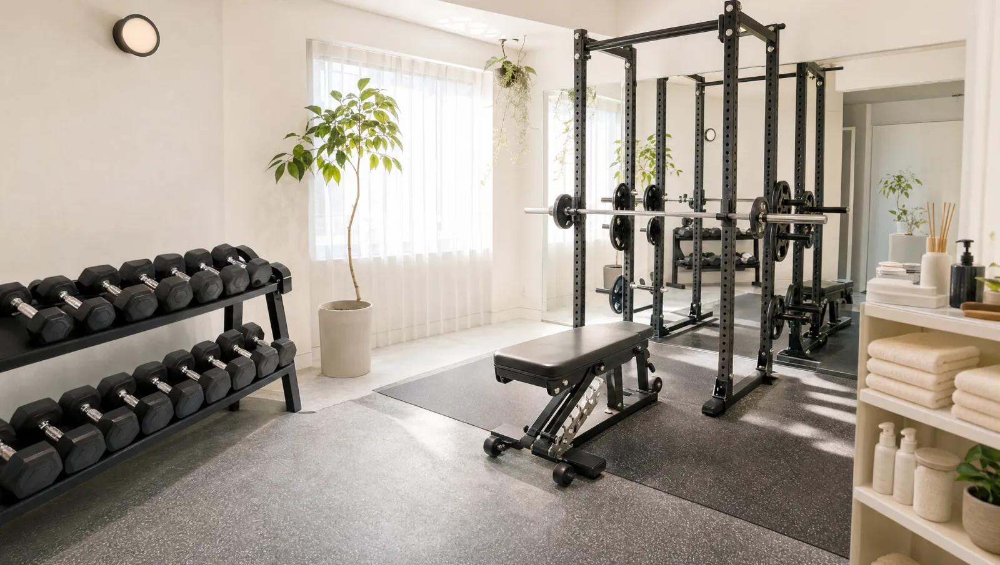

この店舗の特徴

NEXUS白金台・高輪台店は、白金台駅・高輪台駅・目黒駅から通える完全個室パーソナルジム。品川区上大崎の落ち着いた住宅地にあり、日々の暮らしのなかに上質なトレーニング習慣を取り入れたい大人の方に選ばれています。指導はいつも「今日のあなたの状態」から。睡眠・疲労・気分をうかがい、その日のコンディションから逆算してちょうどいい強度に調整するので、体調に波があっても無理なく自然に続きます。空間は落ち着いた住環境と調和した静かな完全個室で、口コミでも「落ち着いた雰囲気で居心地がいい」と評価されています。ウェア・タオル・プロテインまで無料の手ぶら通いOK、料金は1回4,500円〜（ライトコース30分・月4回18,000円）から始められます。
Price料金プラン
入会金は通常55,000円、無料体験当日入会で15,000円（税込）に割引。AI食事指導は月額3,000円（税込）。全店舗共通の料金です。
Reviewsお客様の声
NEXUS白金台・高輪台店はGoogle口コミ★4.9・75件。その日の体調に合わせた無理のない指導と、落ち着いた空間が評価されています。
※お客様の声はGoogle口コミの内容を要約して掲載しています。出典：Google マップ
体調とその日の状態を確認してから組み立ててくれるので、無理なく自然に続けられるのが最大の魅力です。トレーナーが話しやすく、生活習慣の相談まで乗ってもらえます。
落ち着いた雰囲気で居心地がよく、人目を気にせず集中できます。自己流の筋トレで伸び悩んでいましたが、胸や背中への効かせ方が別物になり、トレーニングの質が上がりました。
出張が多く各地のNEXUSを使い分けていますが、白金台・高輪台店は特に居心地が良く、移動の多い生活でも習慣を保てています。
アクセス
- 店舗名
- NEXUSパーソナルジム 白金台・高輪台店
- 住所
- 〒141-0021
東京都品川区上大崎1-11-17 プラムアーク白金台101 - 最寄り駅
- 白金台駅（南北線・三田線）／高輪台駅（浅草線）／目黒駅
- 営業時間
- 毎日 8:00〜23:00
- 電話番号
- 050-1790-8486
白金台・高輪台店のよくある質問
Q白金台・高輪台エリアの完全個室ジムはありますか？+
Q体調に波がありますが無理なく通えますか？+
Q目黒駅からも通えますか？+
よくある質問（全店共通）
料金・制度などNEXUS全店に共通するご質問です。さらに詳しくは110問のFAQをご覧ください。
Q料金はいくらですか？+
Q手ぶらで通えますか？+
Qキャンセルはいつまでできますか？+
Q食事指導はありますか？+
Qトレーナーはどんな人ですか？+
NEXUSパーソナルジム公式サイトを見る